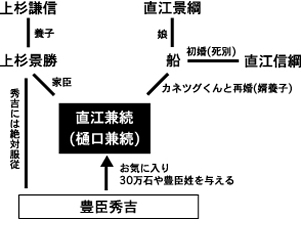
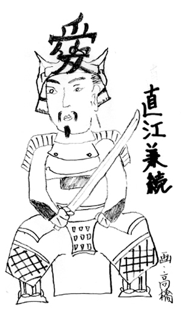

物語のはじまりは、豊臣秀吉(トヨトミ・ヒデヨシ)が天下を統一する少し前。現在の新潟を支配していた上杉謙信(ウエスギ・ケンシン)という武将がいました。ケンシンは直江景綱(ナオエ・カゲツナ)というオジサンを信頼し、いろいろな仕事を任せていました。ところがカゲツナには男の子がいなくて、このままだと直江家が途絶えてしまいます。そこで娘のお船(オセン)を、地元の人気者・信綱(ノブツナ)と結婚させ、婿養子にしました。その直後、カゲツナは死んでしまいますが、ノブツナが跡継となり、直江家は安泰です。
時代は移り、豊臣秀吉が天下人になった安土桃山時代後期。上杉景勝(ウエスギ・カゲカツ)はケンシンの養子ですが、チーム秀吉トップ5の1人となって、ケンシンの死後も新潟を治めていました。そんなある日、オセンちゃんのダンナさん・ノブツナが亡くなってしまうのです。直江家は呪われているのか!?泣き崩れるオセンちゃんを見かねた親分のカゲカツは、一計を案じます。「ケンシンも信頼していた樋口兼豊(ヒグチ・カネトヨ)の息子・カネツグくんを、オセンちゃんと結婚させよう! カネツグくんは頭も良くてスポーツも万能。うん、我ながら名案だ。これで直江家は子々孫々安泰だぞ!」カゲカツ親分の言葉は絶対です。
カネツグくんはオセンちゃんと結婚して、直江家の婿養子になります。ちなみに大河ドラマではカネツグくんの役を妻夫木聡さん、オセンちゃんを常磐貴子さんが演じています。あれほど美男美女だったとは思えませんが、カネツグくんはオセンちゃんをメチャ愛して、側室を作りませんでした。え?側室ってなんだってですか?側室は、まあ、なんとゆーか、浮気相手ですね。本妻=「正室」に対しての「側室」です。側室は、このコーナーが100回続いたら行う「なんたって戦国検定試験」に必ず出る問題なので、ここでキッチリ覚えておいてください。
それはともかく、この養子縁組で樋口兼続は直江兼続になり、よーやく大河ドラマの主人公になれたのです。養子になってからのカネツグくんは、さらにバリバリ仕事をし、ついに天下の豊臣秀吉から「チーム秀吉でフォワードやらんか? 移籍料30万石あげるで」とヘッドハンティングされるのです。けれど、義に篤いカネツグくんは「私は上杉景勝に仕える身です」とかなんとか言っちゃって、こんなに美味しい話を断わります。「さすが正義のカネツグくん!」と思うなかれ。なんと、あとで「やっぱり30万石ちょうだい」だって!「カゲカツ親分がもらったことにして、実は自分が仕切りますから」みたいな言い訳カネツグくんなのです。念のために30万石って、石コロを30万個もらうんじゃありませんよ。1石は10斗=180リットル。お米を年間30マンゴク収穫できるくらいの領土を、秀吉さんはカネツグくんにプレゼントしたのです。義に篤いカネツグくんだって、そりゃもらいますよね。
さらにカネツグくん、かなりファンキーなのです。カネツグくんがオセンちゃんを熱愛してたことは書きましたが、もっとファンキーな愛の表現方法をカネツグくんは思いつきます。なんと、兜(カブト)に漢字の「愛」って付けちゃうんです。本当です。愛兜で突撃し、バッタバッタと敵を斬り殺しちゃうんです。ファンキー超えて、シュールですねぇ〜。現代なら、LOVEって書いたキャップをかぶった殺人鬼です。かなりヤバイです。でも実際には、あんなに重たい兜はかぶれません。あんな兜で戦ったら、自分の首が折れちゃいます。ボクサーがチャンピオンベルトをして戦わないのと同じで、多分、愛兜はカネツグくんのイメージ・キャラクターとして使われていたんでしょう。
時代は移り、豊臣秀吉が天下人になった安土桃山時代後期。上杉景勝(ウエスギ・カゲカツ)はケンシンの養子ですが、チーム秀吉トップ5の1人となって、ケンシンの死後も新潟を治めていました。そんなある日、オセンちゃんのダンナさん・ノブツナが亡くなってしまうのです。直江家は呪われているのか!?泣き崩れるオセンちゃんを見かねた親分のカゲカツは、一計を案じます。「ケンシンも信頼していた樋口兼豊(ヒグチ・カネトヨ)の息子・カネツグくんを、オセンちゃんと結婚させよう! カネツグくんは頭も良くてスポーツも万能。うん、我ながら名案だ。これで直江家は子々孫々安泰だぞ!」カゲカツ親分の言葉は絶対です。
カネツグくんはオセンちゃんと結婚して、直江家の婿養子になります。ちなみに大河ドラマではカネツグくんの役を妻夫木聡さん、オセンちゃんを常磐貴子さんが演じています。あれほど美男美女だったとは思えませんが、カネツグくんはオセンちゃんをメチャ愛して、側室を作りませんでした。え?側室ってなんだってですか?側室は、まあ、なんとゆーか、浮気相手ですね。本妻=「正室」に対しての「側室」です。側室は、このコーナーが100回続いたら行う「なんたって戦国検定試験」に必ず出る問題なので、ここでキッチリ覚えておいてください。
それはともかく、この養子縁組で樋口兼続は直江兼続になり、よーやく大河ドラマの主人公になれたのです。養子になってからのカネツグくんは、さらにバリバリ仕事をし、ついに天下の豊臣秀吉から「チーム秀吉でフォワードやらんか? 移籍料30万石あげるで」とヘッドハンティングされるのです。けれど、義に篤いカネツグくんは「私は上杉景勝に仕える身です」とかなんとか言っちゃって、こんなに美味しい話を断わります。「さすが正義のカネツグくん!」と思うなかれ。なんと、あとで「やっぱり30万石ちょうだい」だって!「カゲカツ親分がもらったことにして、実は自分が仕切りますから」みたいな言い訳カネツグくんなのです。念のために30万石って、石コロを30万個もらうんじゃありませんよ。1石は10斗=180リットル。お米を年間30マンゴク収穫できるくらいの領土を、秀吉さんはカネツグくんにプレゼントしたのです。義に篤いカネツグくんだって、そりゃもらいますよね。
さらにカネツグくん、かなりファンキーなのです。カネツグくんがオセンちゃんを熱愛してたことは書きましたが、もっとファンキーな愛の表現方法をカネツグくんは思いつきます。なんと、兜(カブト)に漢字の「愛」って付けちゃうんです。本当です。愛兜で突撃し、バッタバッタと敵を斬り殺しちゃうんです。ファンキー超えて、シュールですねぇ〜。現代なら、LOVEって書いたキャップをかぶった殺人鬼です。かなりヤバイです。でも実際には、あんなに重たい兜はかぶれません。あんな兜で戦ったら、自分の首が折れちゃいます。ボクサーがチャンピオンベルトをして戦わないのと同じで、多分、愛兜はカネツグくんのイメージ・キャラクターとして使われていたんでしょう。


そうこうしている内に天下の秀吉サマが亡くなり、有名な関ヶ原の合戦でチーム家康が勝つと、人々は一気に徳川家康に迎合します。チーム秀吉だったカネツグくんですが、やっぱり保身に走ります。チーム家康に「ごめんなさい。もう逆らわないから許してください」と謝るのです。なんだか、ちょっと切ないですよね。愛兜のカネちゃんだったのに。その後のカネツグくんは、米沢で農作業や土木工事なんかをしながら余生を送り、60歳で病死しました。義に篤いというよりも、人間味あふれる愛妻家のカネツグくんの人生を、大河ドラマはどう演出するのか、拙者も楽しみにしています。
さて、もしも次回があるならば、久保田利伸ファンなら誰もが敬愛するキーボードプレーヤー・柿崎洋一郎さんの大先祖!? カネツグくんと同じ、上杉ファミリーの一員だった柿崎家を紹介したいと思います。